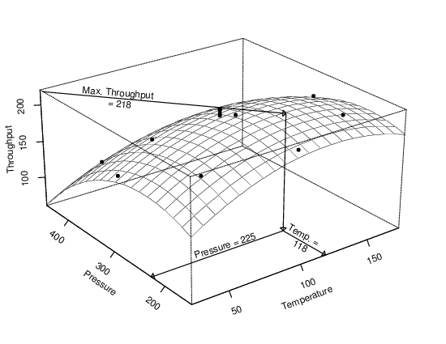
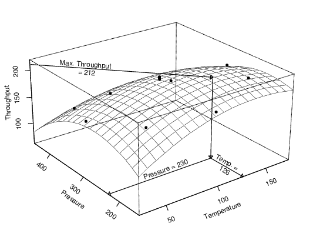
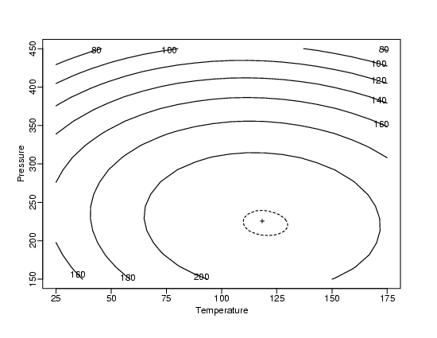

|
4.
Process Modeling
4.1. Introduction to Process Modeling 4.1.3. What are process models used for?
|
|||
| More on Optimization | As mentioned earlier, the goal of optimization is to determine the necessary process input values to obtain a desired output. Like calibration, optimization involves substitution of an output value for the response variable and solving for the associated predictor variable values. The process model is again the link that ties the inputs and output together. Unlike calibration and prediction, however, successful optimization requires a cause-and-effect relationship between the predictors and the response variable. Designed experiments, run in a randomized order, must be used to ensure that the process model represents a cause-and-effect relationship between the variables. Quadratic models are typically used, along with standard calculus techniques for finding minimums and maximums, to carry out an optimization. Other techniques can also be used, however. The example discussed below includes a graphical depiction of the optimization process. | ||
| Example | In a manufacturing process that requires a chemical reaction to take place, the temperature and pressure under which the process is carried out can affect reaction time. To maximize the throughput of this process, an optimization experiment was carried out in the neighborhood of the conditions felt to be best, using a central composite design with 13 runs. Calculus was used to determine the input values associated with local extremes in the regression function. The plot below shows the quadratic surface that was fit to the data and conceptually how the input values associated with the maximum throughput are found. | ||
|  | |||
| As with prediction and calibration, randomness in the data and the need to sample data from the process affect the results. If the optimization experiment were carried out again under identical conditions, the optimal input values computed using the model would be slightly different. Thus, it is important to understand how much random variability there is in the results in order to interpret the results correctly. | |||
| Optimization Result from Repeated Experiment |  | ||
| Optimization Uncertainty | As with prediction and calibration, the uncertainty in the input values estimated to maximize throughput can also be computed from the data used to fit the model. Unlike prediction or calibration, however, optimization almost always involves simultaneous estimation of several quantities, the values of the process inputs. As a result, we will compute a joint confidence region for all of the input values, rather than separate uncertainty intervals for each input. This confidence region will contain the complete set of true process inputs that will maximize throughput with high probability. The plot below shows the contours of equal throughput on a map of various possible input value combinations. The solid contours show throughput while the dashed contour in the center encloses the plausible combinations of input values that yield optimum results. The "+" marks the estimated optimum value. The dashed region is a 95 % joint confidence region for the two process inputs. In this region the throughput of the process will be approximately 217 units/hour. | ||
| Contour Plot, Estimated Optimum & Confidence Region |  | ||
| More Info | Computational details for optimization are primarily presented in Chapter 5: Process Improvement along with material on appropriate experimental designs for optimization. Section 5.5.3. specifically focuses on optimization methods and their associated uncertainties. | ||

{kind=link}
{kind=link}
{kind=link}